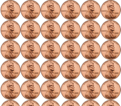
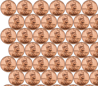

Everything
You see here was solely designed and developed byfor the IGN Code Foo Challenge.
The Golden Gate Bridge is 1.7 mi. long (2.7 km.), or 8,981 ft., and 90 ft. wide.
source: http://en.wikipedia.org/wiki/Golden_gate_bridge »The diameter of a penny is 19.05 mm., or 0.750 in.
source: http://en.wikipedia.org/wiki/Penny_(United_States_coin) »Contrary to popular belief, the consumption of alcohol can actually stimulate positive thinking traits in the human mind. It has also been found that consuming large amounts of alcohol can increase critical thinking skills. Drinking whiskey and/or beer at this point will help determine the steps to follow.
 The first pattern that comes to mind is the typical head-to-toe pattern where the pennies are stacked in a grid-like manner.
 The second pattern that comes to mind is a staggered pattern where the pennies are shifted to the right a half a penny in width. Although this pattern does sacrifice pennies at the edges, it does allow more pennies to be stacked overall. This can easily be seen by counting the full pennies in each image to the right. The staggered image has 33 pennies where the typical head-to-toe pattern only has 30.
Using the staggered pattern, it is more difficult to calculate how many pennies fill a specific area. With the head-to-toe pattern, it would only be necessary to calculate how many pennies can fill a 1 x 1 ft. square (16 x 16 pennies = 256). Then I would be able to easily calculate the total number of pennies using the total area of the bridge (8,981 ft. x 90 ft. = 808,290 sq. ft. x 256 pennies / sq. ft. = 206,922,240 pennies).
But since I'm a perfectionist and have wanted to get the attention of IGN for a long time, that just wasn't good enough for me. I decided that it would be best to calculate how many pennies could fit into each "type" of row: the foundational row and the staggered row.
From there I could determine how many "sets" of rows could fit lengthwise across the bridge.
With the width of the bridge being an exact 90 ft., it's easy to determine how many pennies could fit in the first row. 90 ft. x 12 in. = 1,080 inches wide. It's also convenient that a penny is 0.750 inches in diameter. You divide the total width of the bridge by the diameter of a penny to determine how many pennies in length each row will be: 1,080 in. / 0.750 in. = 1,440 pennies in the first row.
Now, the staggered row has a slight indentation on either side- exactly the width of 1 penny. So we know that the staggered row will have 1,439 pennies. Together, these two rows will have a total of 2,879 pennies.
When you use the staggered stacking method, these two rows together become 35.5 mm. in height. Using the 1 mm. = 0.0393700787 in. conversion, we can determine the height of these rows in inches: 35.5 mm. + 0.0393700787 in. = 1.39763779385 in.
Then, all we have to do is determine how many of these rows will fit length wise across the bridge. The bridge is 8,981 ft. long, which is equivalent to 107,772 inches. So, we can determine this by calculating 107,772 in. / 1.39763779385 in. = 77,110.107120905830 "sets" of rows.
We'll ignore the decimal point here (if it was over .5 we'd be able to fit a half of one "set" of rows). This allows us to make the final calculation of 77,110 "sets" of rows x 2,879 pennies per "set" row = 221,970,900
You could fit 221,970,900 pennies on the Golden Gate Bridge without any of them overlapping.